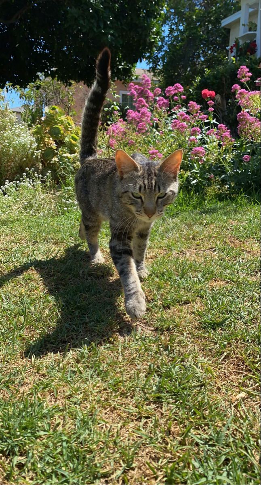
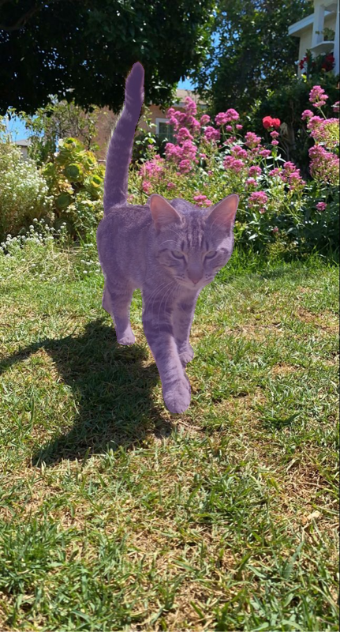
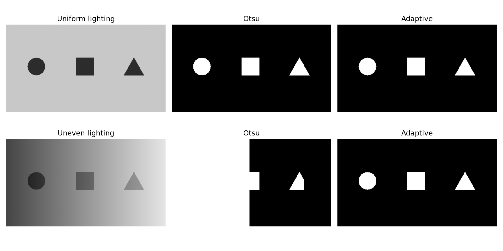
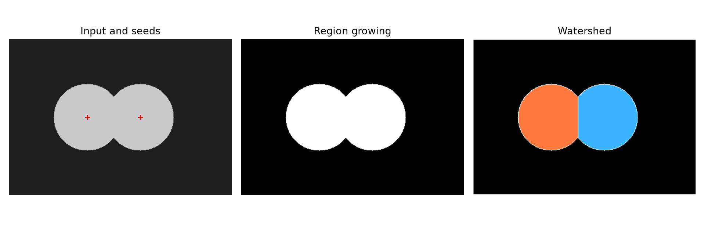
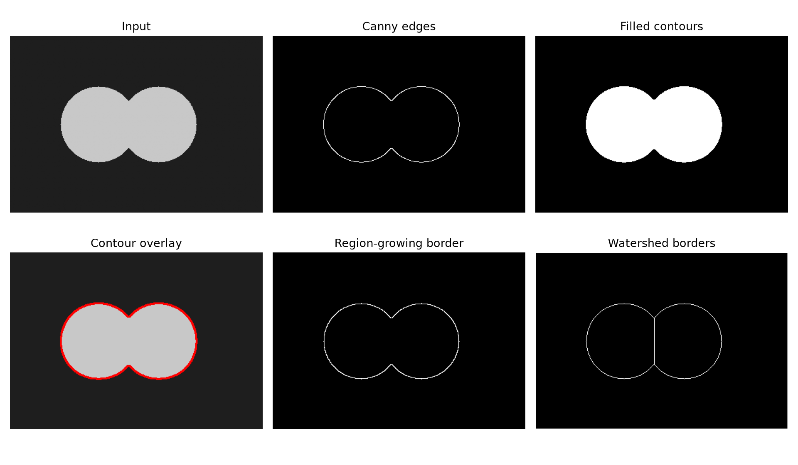
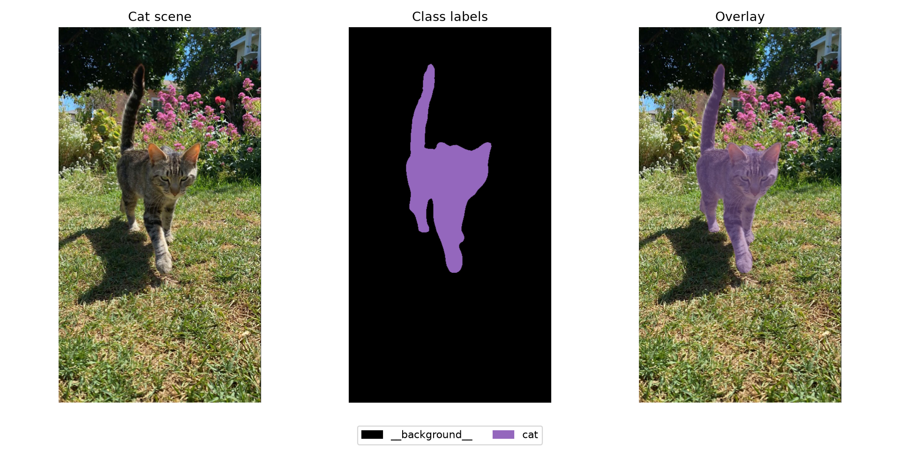

Thresholding
Compare a pixel with a global threshold or a local neighborhood threshold.
intensity → foreground / backgroundSeparate objects from their background. Follow their boundaries. Then give each pixel a class with four approaches to image segmentation.
Real browser processing · No server required


Image segmentation partitions an image into regions. Classical methods use intensity, pixel similarity, or changes at boundaries. Semantic segmentation adds learned category information to identify what each pixel represents.
Start with controlled shapes, explore how touching objects are separated, and finish with a pretrained model on natural photographs and annotated dataset samples.
Compare a pixel with a global threshold or a local neighborhood threshold.
intensity → foreground / backgroundGrow similar connected pixels from seeds; use markers to separate touching regions.
seeds → coherent regionsFind strong intensity changes and use closed contours to form object masks.
gradients → contours → masksUse a pretrained network to assign one supported category to every pixel.
image → per-pixel class labelsExplore the four segmentation approaches specified in the laboratory handout.
Apply global and adaptive thresholds to grayscale images under different lighting.
Investigate pixel similarity, seed selection, and watershed separation.
Detect edges, fill contours, and compare them with region-based borders.
Run semantic inference and compare results using IoU when ground truth is available.
Parts 1–3 run OpenCV.js and region growing in a worker. Part 4 runs the bundled pretrained DeepLabV3 MobileNetV3 model. It is a smaller backbone than the original Python ResNet50; its predictions can differ. Recorded reference images are labeled separately.
Compare Otsu's global threshold with a Gaussian adaptive threshold. Try uneven lighting, then change the neighborhood size.
Loading the sample image…
A single threshold must separate this entire histogram. Lighting gradients can make object and background intensities overlap.
Otsu chooses a threshold that minimizes within-class variance. Adaptive thresholding computes a weighted local mean minus C. The binary-inverse option makes darker objects white. Both succeed on the uniform sample; the uneven sample demonstrates why one global threshold can fail. Very large, low-contrast objects may also challenge adaptive thresholding.
Region growing follows connected pixels similar to the first seed. Marker-based watershed uses every seed to separate touching objects.
Click the input to add up to 12 seeds, or enter coordinates. Seed 1 drives region growing; all seeds drive watershed. Background markers are estimated with Otsu.
Loading the touching-circle sample…
On the circle sample, either seed grows into the same connected foreground because the circles share an intensity. Watershed introduces a dividing boundary between the two marker regions. Extra markers can over-segment an object. On uploaded scenes, Otsu's background estimate may be imperfect; this is a limitation of this marker setup, not a learned object detector.
Use Canny edges and filled external contours. Compare their borders with region growing and watershed on the same input.
For your own image, upload it and place seeds in Part 2, then choose “Use Part 2 image & seeds” here. This keeps the border comparison on exactly the same image.
The touching-circle input is ready.
Canny uses image gradients, non-maximum suppression, and hysteresis thresholds. Gaussian smoothing reduces noise. Closing repairs small gaps, but cannot guarantee that every real object has a valid contour. On the touching circles, the combined outer contour remains one region; watershed supplies an internal separator. Noise may create false edges, while weak boundaries may be missed.
Run a real pretrained DeepLabV3 model on natural photographs. Compare predictions with the annotated pet dataset, or upload your own image.
Loading the sample list…
Three genuine Oxford-IIIT Pet images include pixel trimaps. Foreground is label 1, background is 2, and uncertain boundary pixels (3) are excluded from IoU. This is a small demonstration subset, not a full benchmark.
Choose evaluation to run the model on all three annotated samples.
The browser model uses official TorchVision COCO_WITH_VOC_LABELS_V1 weights, trained on the COCO subset with 20 Pascal VOC object classes plus background. It uses RGB / 255 normalization with ImageNet mean and standard deviation. To reduce device cost, input dimensions preserve approximate aspect ratio with a longest side of 384 pixels and multiples of 32. Output logits are reduced with argmax and labels are resized with nearest-neighbor interpolation.
The original desktop implementation uses DeepLabV3 ResNet50 with its official 520-pixel preprocessing. Browser MobileNetV3 results are measured separately and must not be reported as the original ResNet50 run. No training or backend inference is performed on GitHub Pages.
Genuine saved Python results are shown here. Live experiment measurements appear above.
Foreground IoU for both Otsu and adaptive thresholding.
Otsu versus adaptive foreground IoU on the controlled gradient.
Watershed separates objects that region growing merges.
| Method | Sample | Foreground IoU | Interpretation |
|---|---|---|---|
| Otsu | Uniform lighting | 1.0000 | Clear intensity separation |
| Adaptive | Uniform lighting | 1.0000 | Local threshold succeeds |
| Otsu | Uneven lighting | 0.1003 | Global threshold confuses illumination with objects |
| Adaptive | Uneven lighting | 1.0000 | Local neighborhoods compensate for the gradient |
| Region growing | Touching circles | 1.0000 | Correct foreground, but both objects are merged |
| Watershed | Touching circles | 0.9719 | Separates markers; boundary pixels affect overlap |
| Filled Canny contours | Touching circles | 0.9845 | Recovers the shared outer region |
| DeepLabV3 ResNet50 | Pinterest garden cat | Not available | No ground truth; 9.46% predicted cat coverage is not accuracy |
IoU = intersection / union. These controlled foreground scores do not measure instance separation and are not general accuracy estimates across unrelated images.
Thresholding suits high-contrast documents or objects. Region methods suit coherent areas and touching cells. Edges support shape inspection. Semantic models provide object categories in natural scenes.
Global thresholding and fixed-kernel edge operations scale roughly with pixel count. Region growing visits connected pixels; watershed adds marker propagation. Neural inference uses substantially more memory and computation.
Lighting, noise, marker choices, and weak boundaries affect classical methods. Learned models depend on training coverage, image resolution, and supported classes. A high foreground IoU can still hide merged objects.




Explain the differences between thresholding, region-based, edge-based, and semantic segmentation. Provide one advantage and one limitation for each.
Download written answersThresholding classifies pixels by comparing their intensity with a global or local threshold. Advantage: it is fast and simple for high-contrast images. Limitation: overlapping foreground and background intensities cause errors, especially under uneven illumination with a global threshold.
Region-based methods form connected areas using similarity or markers. Region growing expands from seeds, while watershed separates regions through marker-guided propagation. Advantage: suitable markers can separate touching objects. Limitation: poor seeds or too many markers can cause leakage or over-segmentation.
Edge-based methods detect intensity changes to locate boundaries and can fill closed contours to form masks. Advantage: they clearly highlight object outlines. Limitation: noise and weak or broken edges can produce false or incomplete regions.
Semantic segmentation uses a trained model to assign a category to each pixel. Advantage: it provides object meaning in complex scenes. Limitation: results depend on the model's training data and supported classes; separate objects of the same class receive the same class label.
The activity demonstrates how intensity, similarity, boundaries, and learned categories lead to different segmentation results. Adaptive thresholding handles the controlled lighting gradient, while watershed separates touching objects that region growing merges.
Canny reveals object outlines, and DeepLabV3 adds category information to natural scenes. Quantitative comparisons require compatible ground-truth masks; dataset trimaps make that evaluation possible. No single method is best for every image or task.